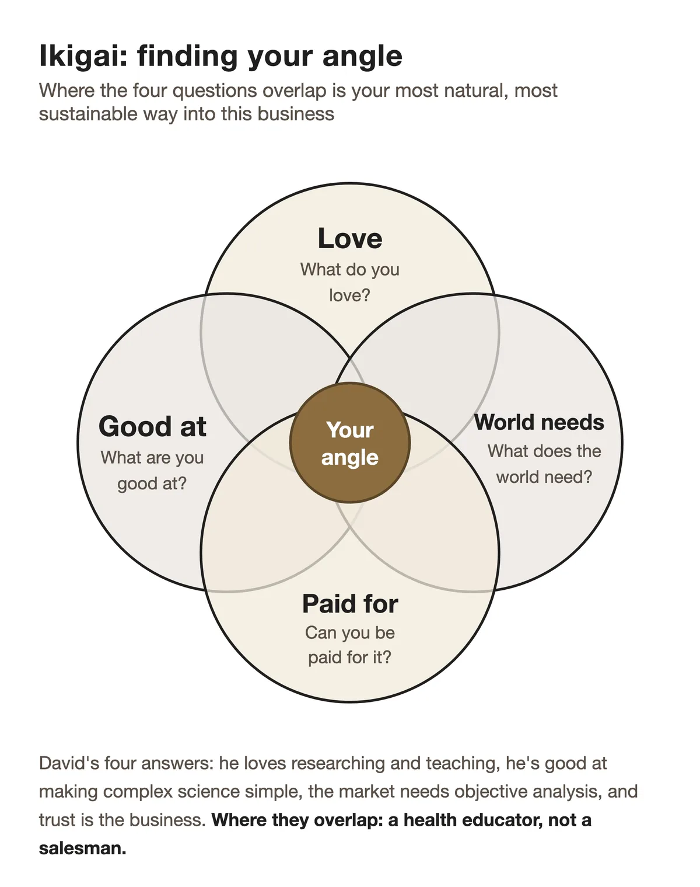
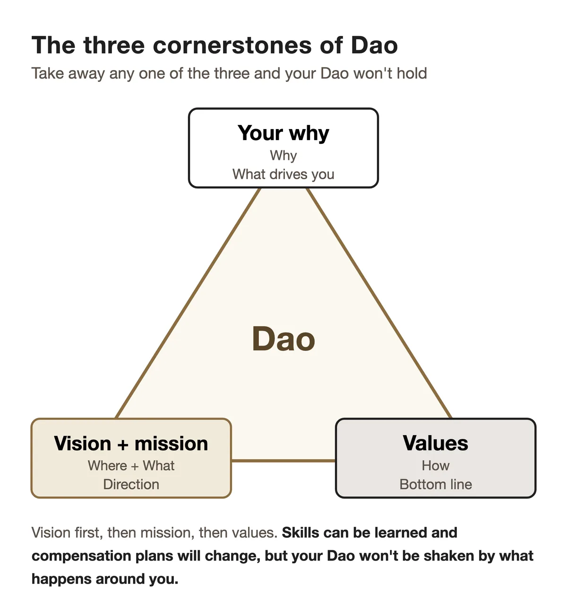

「道者，令民與上同意也。」
"The Moral Law causes the people to be in complete accord with their ruler."
Sun Tzu, The Art of War, Chapter 1 (Laying Plans), translated by Lionel Giles
Strategy Brief: This chapter is about the foundation of a direct-selling business: your Dao, the deeper why behind everything you do. Through my 38 rejections, you'll see how to find that why, how to use the Ikigai framework to find an angle that suits you, and how to set your vision, mission and values. Without Dao, no technique will carry you through hard times.
I was new to the business. On the last day of my third month, that month's commission statement arrived: RM 0. I sat at my desk and opened my bank account. Products: RM 3,300+. Training and events: RM 800+. Petrol and travel: RM 900+.
Three months of commission: a first cheque of RM 128. A little more in month two, when family and relatives bought to support me. Then nothing in month three. Balance: about RM 240.
Over those three months, I'd worked through a list of 200 names, calling and setting up meetings one by one. Apart from family and relatives, every single one said no. 38 people. Number 5 said, "Direct selling? Not interested." Number 20 said, "Maybe next time." Number 30 looked at me and shook their head: "You're still doing this?"
I stared at that balance with one thought in my head: what am I doing? Right then, I was ready to quit.
This story doesn't end the way you think. That night, I found the idea at the centre of this book: my Dao.
A simple reason to start
Let me go back three months. Just as I was starting out, someone in my family began using some health products. She lost a lot of weight and had a completely different energy about her. I watched her change and thought: this works. Maybe I could build a business with it.
There was no dramatic reason and no grand sense of mission. It just seemed worth a try. That night I looked up the company and decided: let's go.
I thought it would be easy. The product worked, so of course people would want it.
What actually happened?
The first person said politely, "No need, thanks." Fine, I thought, next. Number 5 heard the words direct selling and shook their head: "Not interested." I started to feel uneasy.
By number 10, the answer was "I don't have money," before I could even finish the product introduction I'd prepared. Number 20 brushed me off: "Maybe next time." Number 30 gave me a look that was almost pity: "You're still doing this?"
Thirty-eight people. Thirty-eight noes. Not a single exception.
Three months in, I'd spent about RM 5,000, and the commission I'd earned back wasn't even half of that. And most of that came from family and relatives buying to support me. Every night I came home asking myself whether I just wasn't cut out for this, whether I'd picked the wrong thing. People around me started giving me that I told you so look.
Attempt 39: the turning point
Before giving up, I decided to try one last time. I didn't have much faith left. I just didn't want to walk away regretting that I hadn't tried once more.
Attempt 39 wasn't a new person. It was Aunty Lim, a teacher who had phoned me after seeing my flyer. In my second month, on my first visit to her home, I'd pushed too hard and she'd shown me the door. After that I visited her a few times with fruit, nasi lemak and kuih, and never mentioned the products once. Chapter 7 tells that part in full.
This time I did something completely different from the first 38. I dropped the sales pitch I'd prepared and stopped reciting ingredients and benefits. I simply told her, honestly, what I had seen happen to someone in my own family. One real person's real experience, with no polished script around it.
When I finished, she didn't say "I'll think about it." She said, "Teach me how to use them." She took a box of each to start, paid for the full set on the spot, and asked me to bring the rest the next day.
When I arrived with the order, two of her friends were there. She'd invited them on purpose. Both of them bought that day too.
It wasn't my first order. Family and relatives had bought long before. But she was the first person who bought because she believed, not as a favour to me. On attempt 39.
That night I sat looking at that order. I wasn't celebrating; it was one order. But something had clicked.
The first 38 failures weren't all down to poor technique. I had been selling things, when I should have been sharing something I believed in.
Those three months taught me the most important lesson of all: my reason for starting wasn't deep enough. Through those 38 failures, my reason was "the product works, so I should do this business." It sounds reasonable. But when you're facing your tenth rejection, then your twentieth, and you see the number in your bank account, a reason like that won't hold you up.
It took hitting rock bottom that night before I asked myself the real question: why am I doing this?
It wasn't for fast money; three months of commission had settled that. It wasn't to prove anyone wrong; 38 rejections had been embarrassing enough. I was doing it because I truly believed in what I'd seen. If it had made a difference for someone I loved, it could make a difference for other people too. And I was willing to be the one who shared it.
Once I was clear on that, everything changed. From attempt 40 to 50 to 100, it got easier every time. I hadn't become a better salesman. I finally knew why I was fighting.
Today, whenever a new partner tells me, "Mikael, I've been turned down five times. I don't know if I can keep going," I think of my first three months. I tell them: "I was turned down 38 times before I got my first yes that wasn't a favour. How many times you've been rejected doesn't matter. What matters is this: do you know why you're carrying on?"
This is what Sun Tzu meant by Dao
The Art of War opens like this: "The art of war is of vital importance to the State. It is a matter of life and death, a road either to safety or to ruin. Hence it is a subject of inquiry which can on no account be neglected."
Sun Tzu then names five factors that decide every war, and Dao comes first. Giles translates it as "the Moral Law", which "causes the people to be in complete accord with their ruler". In plain terms, the people and their leader share one purpose, and they're ready to face any danger together.
What I worked out in front of my bank balance that night is exactly what Sun Tzu meant. Building a direct-selling business is one of the big decisions of your life. Treat it that way. Your Dao, why you fight and who you fight for, decides whether you hold on when things get hard, and whether your team is willing to follow you.
Two and a half thousand years later, people are still proving him right. In Japan, Kazuo Inamori founded Kyocera and what became KDDI, then, late in life, brought a bankrupt Japan Airlines back to profit. All his life he returned to two ideas: keiten aijin, "respect heaven, love people", and putting the heart at the centre of everything. Respect the market, its rules and the law of cause and effect. Genuinely care about every life you touch.
That is almost exactly Sun Tzu's Dao, retold in the language of modern business.
In direct selling, Inamori's principle is an everyday decision tool. Every time you make a call that affects your team (whether to push a product, where to place a new person, whether to say something) ask yourself: does this respect heaven and love people? When the answer feels off, that's usually your Dao talking.
When times are good, you can't tell who has Dao and who doesn't. When times get hard, you find out fast. Here's what that looks like.
The cost of having no Dao: Scott's story
Years ago I knew a direct-selling leader. Let's call him Scott. Scott was good. Within a few years he'd built a team of more than a thousand people. He earned a lot, drove a sports car, lived in a big house and was always on stage at company events, collecting awards. Plenty of people envied him, and plenty wanted to follow him.
Over coffee once, I asked him why he did this business. He laughed. "For the money, of course! The car, the house, the status. Look, everywhere I go now, people know me." I asked what his team's mission was. He shrugged. "Mission? Helping them make money. Everyone's here for the money."
Something about that bothered me. But his team was so big and his numbers so good. Who was I to say he was wrong?
Two years later, we found out. The company changed its compensation plan. The new plan barely touched leaders who'd built for the long term, but it cut the early bonuses for new partners. Scott's team blew apart.
Over the next few months, people left in waves. Even his core leaders moved to other companies. Six months later, his thousand-strong team was down to a few dozen. His income fell sharply. He sold the BMW, moved out of the big house, and eventually left the industry.
A change like that tests every team, and plenty of people take a hit to their income. But the teams that come through it usually share one thing. They follow a shared Dao, not a compensation plan: helping people live better, or building a team that looks after each other for the long run.
At a moment like that, a leader with Dao can say: "The bonus may be a bit smaller. But our mission hasn't changed, our values haven't changed, and the reason we started, to help people, hasn't changed. If you came for the mission, stay. If you only came for the bonus, I respect your choice." People will still leave a team like that. The ones who stay know why they're staying.
Later, Scott told me something like this: "Mikael, I regret it. I built a team of over a thousand people, but they were never really a team. Just a crowd chasing bonuses. When the bonus changed, they left. I never had a real Dao."
That's Sun Tzu's Moral Law in real life. A team that follows bonuses and a team that follows a mission can take the same hit and end up in completely different places. Your Dao decides whether your team is built on sand or on rock.
Ikigai: finding the angle that's yours
Once you've found your Dao, the next question is how you'll live it out.
A lot of people assume direct selling means being a smooth talker, a hard seller, a natural networker. What I've seen in 23 years is different. The most successful people are often not the best talkers. They're the ones who found an angle that suits who they are.
A very practical tool here is Ikigai, a Japanese idea often translated as "a reason to get up in the morning". Today it's usually drawn as four overlapping circles: what you love, what you're good at, what the world needs, and what you can be paid for. Where all four overlap is your most natural, most sustainable way into this business.
Let me show you with a real case. At the time, I was on the corporate side, running training and marketing. One of our partners was an electrical engineer. Let's call him David.
David was careful to a fault, with a strong logical mind. But he had one problem: he couldn't sell at all.
In his first month, David invited 10 people for coffee to share the products. It was the same script every time. He'd talk non-stop about the ingredients, the molecular weight, the ISO certifications, what the studies showed. Across the table, his friend's eyes would start to drift. A yawn. "Er... I'll think about it." Ten attempts, ten noes.
David came to me, discouraged. "Mikael, I'm not cut out for this. I can't do those sales scripts." "Hang on," I said. "Let's sit down and talk."
I didn't know the word Ikigai back then. But looking back, our conversation that day followed those four circles exactly.
What do you love? "I love researching things and figuring out complicated stuff. I love teaching, and seeing that look on someone's face when they go, 'Oh, so that's how it works.'"
What are you good at? "Technical analysis, organising data, turning complex science into language a non-specialist can follow."
What does the world need? The market was full of exaggerated health-product claims, and consumers didn't know whom to believe. They needed objective, scientific analysis.
What can you be paid for? If you help people make informed choices, they'll trust you. And trust is the best business there is.
The overlap was clear. David didn't need to become a salesman. He needed to become a health educator.
Over the next three months, David changed his whole approach. He made a series of comparison charts: ingredient analyses of different brands, molecular-weight comparisons, summaries of the scientific literature. He wrote myth-busting articles that turned complex research into plain language. Every Saturday afternoon he ran a free talk at a café, teaching people how to read supplement labels.
David never sold at his talks. He only taught. But afterwards, people would come up and ask, "David, what do you use yourself?" and "Where can I get the one you recommend?" The customers came to him.
Two years later, David was one of the company's top ten partners by sales. He never pushed anyone. Every customer came to him, and his referral rate was more than double the company average. And he loved getting up in the morning, because he'd found his Ikigai: doing what he loves, in the way he's good at, meeting a real need.
David's story shows there's more than one way to succeed. Love research and you're good at analysis? Be an educator. Love caring for people and you're good at listening? Be an advisor. Love creating and you're good at content? Be an influencer.
Don't force yourself to become a salesperson. Build the business your way. David didn't change who he was. He just found the angle that was his.

Setting your Dao: vision, mission and values
Once you have your why and your angle, make them concrete. Your Dao has three parts.
- Vision: where you want to be in three to five years. For example: "Build a core team of 50, where everyone can work independently and support each other." Specific numbers beat vague slogans every time. "Become a top leader" is too vague. "Develop five partners who can lead their own teams within three years" tells you where you're heading every morning.
- Mission: who you serve in this business, and what problem you solve for them. For example: "Help the people around me improve their quality of life." It doesn't need to be grand, but it has to be true. If you can't say it out loud, or you don't believe it when you do, it isn't your mission yet. A good mission is one you'd still repeat to yourself in the mirror after your twentieth rejection.
- Values: the three to five principles you'll never compromise on. For example: integrity (your actions match your words, and you keep your promises), growth (at least one book and one training a month), contribution (other people's success before your own numbers). Values are what you decide with when you face an ethical dilemma. When someone suggests exaggerating what a product does to hit a target, your values give you the answer. When you're choosing between short-term numbers and long-term trust, your values make the call.
Ethics are your Dao's bottom line. Never exaggerate what a product does. Never lure people in with false promises. Respect everyone's right to say no, and always do business legally and properly.
Sun Tzu says Dao brings people into accord with their leader. If you want your team to believe in you and follow you willingly, scripts won't get you there. Your character as a person will.

When your Dao isn't clear yet
To be honest, not everyone can write a perfect statement of their Dao at the start. I couldn't either. Mine was forced out of me in my third month, facing 38 rejections and almost nothing left in the bank.
If you ask yourself "What's my why?" and the answer is still fuzzy, that's normal. Here are three common situations, and my advice for each.
- "I just want to make more money. Does that count as Dao?" There's nothing wrong with wanting to make money. But if it's your only reason, it won't survive the first three months of rejection. Dig one level deeper: what is the money for? Your children's education, your parents' retirement, leaving a job you don't like? That deeper reason is your real why.
- "I believe in the product, but I can't come up with some grand mission." It doesn't need to be grand. "I believe this can help people, and I want to share it" is enough. David's Dao wasn't grand either. He just wanted to help people see the facts clearly, and that simple belief kept him going.
- "I've tried for months and still can't find my Dao." Then keep going and keep watching. Some people discover their Dao by acting, not by thinking at a desk. Act first, adjust as you go, and keep the question in mind. One day a customer will thank you for something you shared, or a partner will find their direction because of your guidance. In that moment, your Dao may become clear.
There's one more situation I'll be frank about. Some people find their Dao, but they're in the wrong place. Your mission is clear, but the company's products aren't good enough, or the team culture clashes with your values. Then the problem is the battlefield you chose, and your Dao is fine.
In the next chapter we'll look at how to assess your company, its products and your market. Your Dao needs a platform worthy of it.
Your Dao is your brand
Your Dao is more than a private belief. It's also your strongest personal brand. When everything you say and do comes from a real Dao, people sense something that can't be faked. Sincerity draws people in; packaging doesn't.
On social media and in every conversation offline, what you say should match your Dao. That consistency builds trust over time. A personal brand built on a clear Dao naturally attracts people who share your values, whether they become customers or business partners.
That's Sun Tzu's Moral Law in a modern setting. You don't have to chase people. The ones who believe what you believe will come to you.
David is the best example. His Dao (helping people see the truth) became his brand (the health educator). Customers came to him, and his referral rate was more than double the company average. The clearer your Dao, the stronger the pull of your brand.